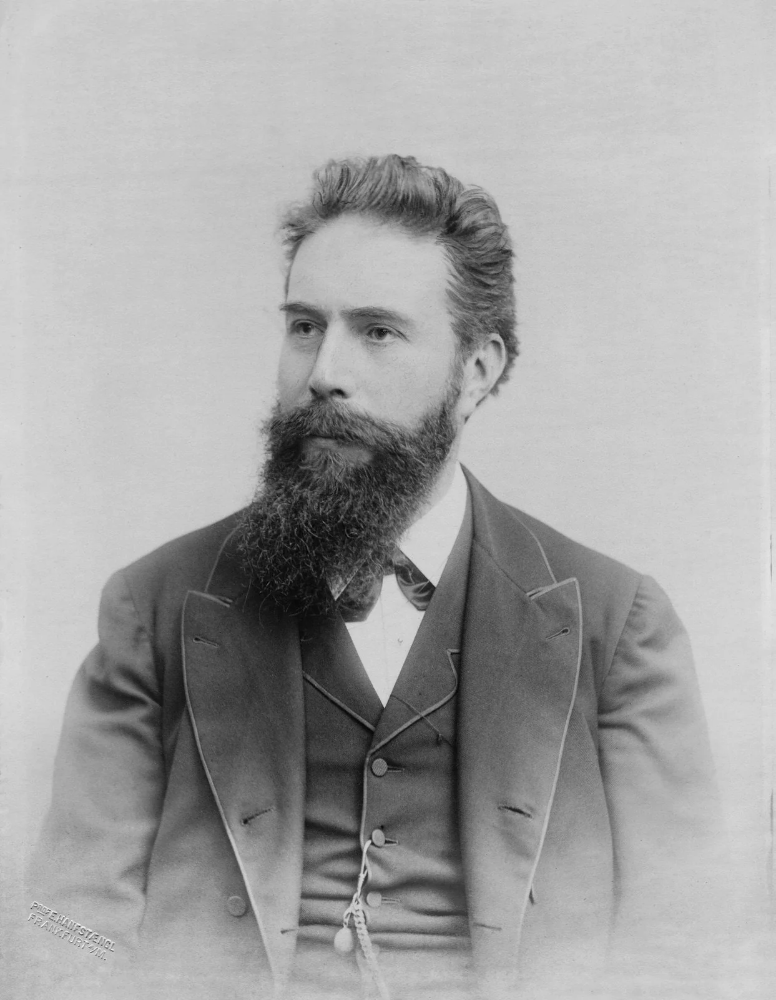
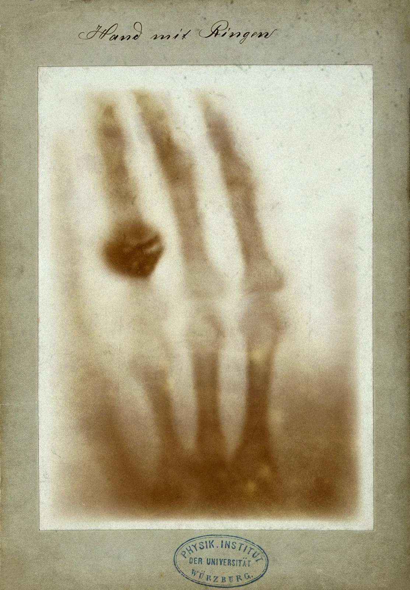
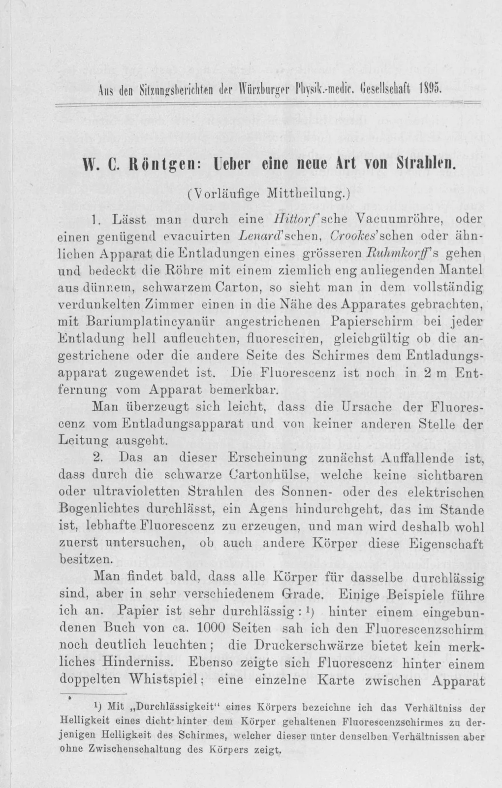
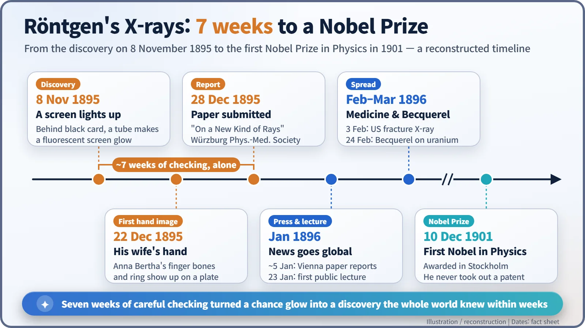
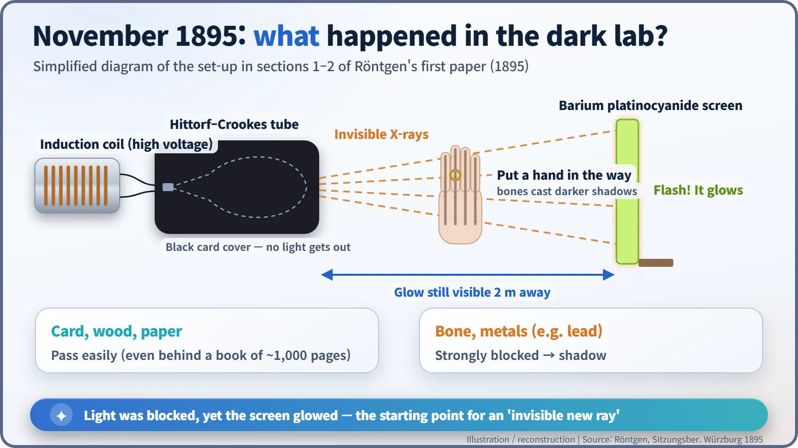

Nuclear History · 005
A Glow in the Dark Lab — Röntgen Discovers X-rays (1895)
A screen glowed beside a tube wrapped in black card, and seven weeks of careful checking turned that chance flicker into a new kind of ray.
On 8 November 1895, a screen in Wilhelm Röntgen's darkened lab glowed beside a discharge tube wrapped in black card. After about seven weeks of careful checking he announced a new, invisible kind of ray and called it "X-rays". Within weeks the whole world was looking through hands, and within months the discovery had led to radioactivity.
A glow that should not have been there
Friday, 8 November 1895, the Physics Institute of the University of Würzburg, Germany. Towards evening, in a darkened laboratory, a 50-year-old professor named Wilhelm Conrad Röntgen (1845–1923) sent a high-voltage discharge through a glass tube. He had wrapped the tube snugly in thin black card, so no light could possibly escape. Yet a paper screen lying on a nearby bench flickered faintly with every discharge. The light was blocked, and still something was getting out. [3] [4]

When physics was "nearly finished"
The hot topic in European physics at the time was cathode rays. Pump most of the air out of a glass tube, apply a voltage, and something streams from the negative electrode (the cathode) and makes the glass wall glow. Physicists were arguing over whether it was a stream of particles or a kind of wave. Philipp Lenard had even coaxed cathode rays out of a tube through a thin aluminium window.
At the same time, there was a feeling that the big framework of physics was more or less complete. In an 1894 address at the University of Chicago, the American physicist Albert A. Michelson passed on a remark: "An eminent physicist has remarked that the future truths of physical science are to be looked for in the sixth place of decimals." In other words, all that was left was more precise measurement. Within little more than a year, that confidence was shaken. [7]
Seven weeks alone, and a famous hand
Röntgen did not rush to announce anything. For about seven weeks he shut himself away in the lab and checked this mysterious "something" from every angle. According to his paper, the screen still glowed 2 m away from the apparatus, and it even glowed behind a bound book of about 1,000 pages. Wood and paper let the rays through easily; metals such as lead stopped them well. A magnet did not bend them, so they were not cathode rays either. And when he held his hand in front of the screen, the bones appeared as darker shadows inside the shadow of the hand. [1]
On 22 December he photographed the left hand of his wife, Anna Bertha Röntgen (1839–1919), on a photographic plate. The finger bones and her wedding ring stood out clearly. A famous story says that when she saw the picture she exclaimed "I have seen my death" (an English rendering of the German "Ich habe meinen Tod gesehen"). It is a story often told, but it rests on later retellings; no first-hand record of it has been confirmed.

On 28 December, Röntgen submitted his manuscript "Ueber eine neue Art von Strahlen" ("On a New Kind of Rays") to the Physical-Medical Society of Würzburg. Since he did not know what the rays were, he borrowed the letter mathematicians use for an unknown. In a footnote he wrote, in German, that "for the sake of brevity" (our translation) he would call them "X-rays". [1] [5]


So what are X-rays, and why do they show bones?
Today we know that X-rays are electromagnetic waves, the same family as visible light and radio waves, only with a very short wavelength. They are produced when fast-moving electrons slam into metal or glass and brake hard, or when electrons deep inside an atom jump between inner shells. In Röntgen's tube, they were born where the cathode rays (which turned out to be streams of electrons) hit the glass wall. One point matters for nuclear history: X-rays come from electrons, not from the atomic nucleus. Gamma rays, which come from the nucleus, have a different birthplace.
Seeing bones works rather like a shadow puppet show. Bone, rich in calcium, and metals absorb much of the X-ray beam, while skin and muscle let most of it pass. So the places where the rays are "blocked" leave a different mark on the plate.

A world goes wild, and pays a price
Around New Year's Day, Röntgen mailed offprints and photographs to colleagues. In early January 1896 the Vienna newspaper Die Presse ran the story, and the news raced around the world. At his first public lecture, on 23 January, Röntgen X-rayed the hand of the anatomist Albert von Kölliker on the spot, and Kölliker proposed calling the new radiation "Röntgen rays". Within weeks, doctors in Britain and the United States were using X-rays to find needles lodged in hands and to spot broken bones. In the first year alone, reportedly more than 1,000 scientific articles on X-rays appeared. [3] [6]
There was a dark side too. From 1896 onwards, people who worked with the apparatus began reporting skin burns and hair loss. Humanity learned that radiation can harm the body by paying a steep price, and those painful lessons became the starting point of radiation protection.
X-rays also pulled the trigger on the next discovery. In January 1896, Röntgen's X-ray pictures were presented at the Academy of Sciences in Paris. Henri Becquerel wondered whether glowing (fluorescent) materials might give off similar rays, tested uranium salts, and reported his results on 24 February. The door to radioactivity had opened. [8]
On 10 December 1901, Röntgen received the very first Nobel Prize in Physics, "in recognition of the extraordinary services he has rendered by the discovery of the remarkable rays subsequently named after him." Yet he never took out a patent on X-rays; he felt they should be available to everyone. In the end, what turned a chance flicker into a discovery was seven weeks of meticulous checking. [2]